Méthodes, résultats, limites et recommandations pour l’analyse d’un réseau urbain résilient.
8 novembre 2026 · 20 h 00
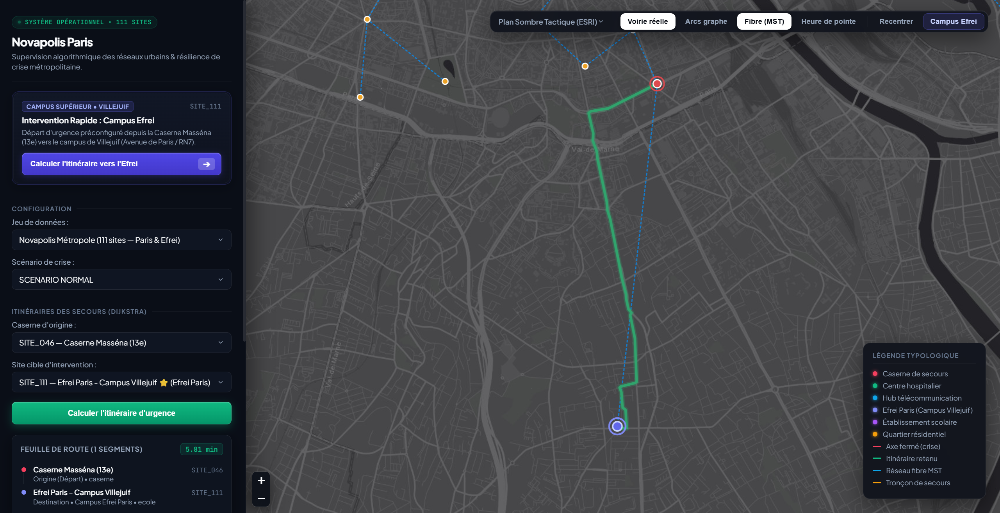
Figure 1 — Vue de démonstration du dashboard Novapolis.
Novapolis Résilience est une plateforme d’aide à la décision conçue pour analyser simultanément un réseau routier orienté et un réseau de fibre optique non orienté. L’objectif est de répondre à une situation opérationnelle simple mais exigeante : acheminer des secours malgré des sens uniques, des fermetures d’axes, des inondations ou une rupture d’infrastructure télécom.
SITE_001 → SITE_027, évalué à 7,65 min.Comment combiner la garantie mathématique des algorithmes de graphes avec une représentation cartographique suffisamment concrète pour aider un opérateur à comprendre, comparer et justifier une décision de secours ?
Les notebooks décrivent une chaîne reproductible : génération ou chargement des jeux CSV, validation des identifiants et coordonnées, construction des graphes, exécution des modules, production de graphiques puis vérification par tests automatisés. Le jeu réaliste documenté contient 110 sites répartis en districts, des casernes, hôpitaux, hubs télécom, écoles, quartiers et sites logistiques.
| Couche | Contenu | Rôle |
|---|---|---|
| Données | Sites, routes, fibre, demandes, scénarios | Décrire le territoire et les perturbations |
| Graphe routier | Orienté, pondéré par le temps | Accessibilité et itinéraires d’urgence |
| Graphe fibre | Non orienté, pondéré par le coût | Arbre couvrant et réparation |
| Services cartographiques | Tuiles et géométries de voirie | Passer du modèle topologique à la carte |
| Interface | Dashboard web, modales, toggles, matrice | Audit et interprétation par un utilisateur |
La représentation abstraite par arcs permet de visualiser la structure du graphe et de vérifier les calculs. La représentation « voirie réelle » affiche une polyligne suivant les rues et fournit un support plus crédible pour un opérateur. Cette séparation est importante : une ligne droite entre deux coordonnées n’est pas un itinéraire praticable.
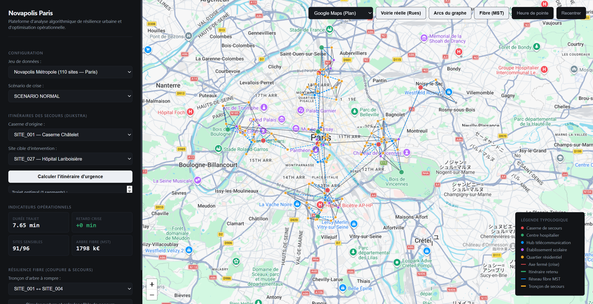
Figure 2 — Réseau topologique.
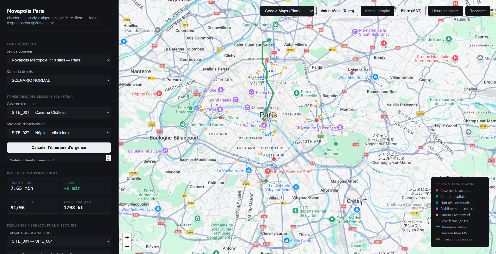
Figure 3 — Itinéraire sur la voirie.
DFS et BFS sont utilisés pour les parcours, les composantes et les alertes d’inaccessibilité. La détection des cycles orientés repose sur trois couleurs. Les composantes fortement connexes sont analysées avec Tarjan. Le choix de distinguer accessibilité orientée, connexité faible et connexité fibre évite de confondre une route praticable dans un sens avec une liaison physique bidirectionnelle.
Dijkstra est le moteur opérationnel pour des temps non négatifs. Bellman-Ford sert de référence et de détecteur de circuits absorbants. Floyd-Warshall fournit une comparaison toutes paires sur des tailles compatibles avec une matrice dense. La reconstruction du chemin rend le résultat explicable, au-delà d’une simple valeur numérique.
Un cycle de poids négatif rend la distance minimale non bornée. L’implémentation vérifie l’accessibilité du cycle depuis la source : si le cycle est atteignable, la propagation de -∞ est justifiée pour les sommets qui en dépendent ; s’il est isolé, les distances de la source restent interprétables et l’anomalie est signalée séparément.
Kruskal s’appuie sur Union-Find ; Prim utilise un tas. Les deux algorithmes sont comparés sur le coût et le nombre de tronçons. Après une coupure, la méthode identifie les deux composantes et recherche une liaison franchissant la coupe à coût minimal.
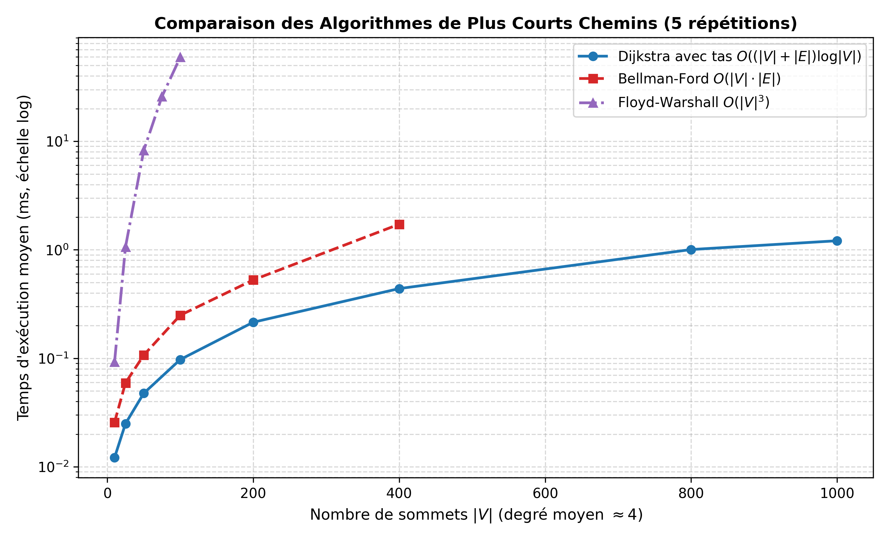
Figure 4 — Comparaison empirique des chemins.
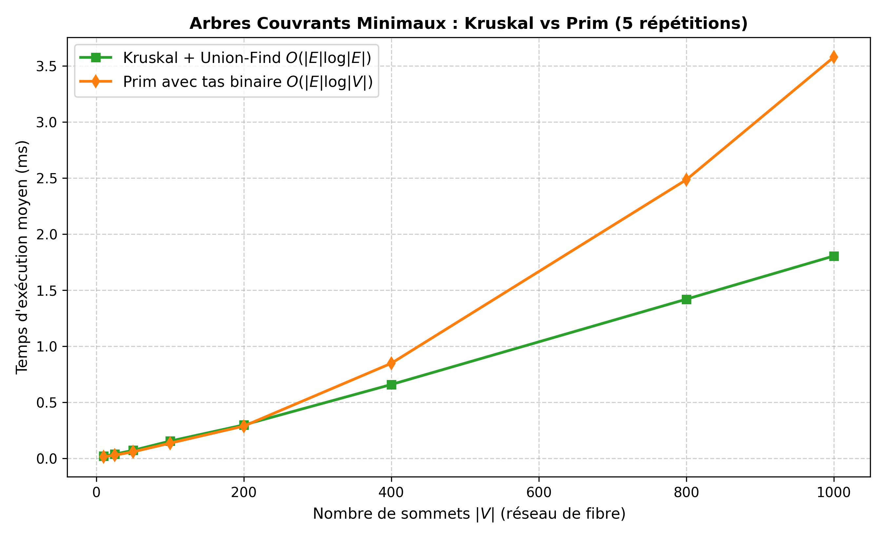
Figure 5 — Comparaison des arbres couvrants.
Le code est organisé par responsabilité : gestion des données, génération, accessibilité, chemins, arbres couvrants, résilience, benchmarks, visualisation et dashboard. Le choix de ne pas utiliser NetworkX est cohérent avec l’objectif pédagogique : les structures de données et les invariants algorithmiques sont visibles et contrôlables.
| Famille de tests | Vérification | Résultat |
|---|---|---|
| Modèle de graphe | Sommets, arêtes, poids, coordonnées, copies | OK |
| Accessibilité | DFS/BFS, cycles, composantes, diagnostic | OK |
| Chemins | Concordance des algorithmes, poids négatifs, reconstruction | OK |
| Fibre | Union-Find, égalité Kruskal/Prim, panne | OK |
| Scénarios | Clonage, retards absolus/relatifs, matrice | OK |
python -m unittest discover tests -v termine avec 31 tests réussis en 0,129 seconde.Les captures montrent une progression de la carte expérimentale vers une interface plus lisible : états de bascule, modales d’audit, visualisation de la fibre et matrice multiscénario. L’audit QA confirme le fonctionnement des interactions principales : itinéraire, bascule arcs/rues, scénarios, coupure fibre et fermeture de modale.
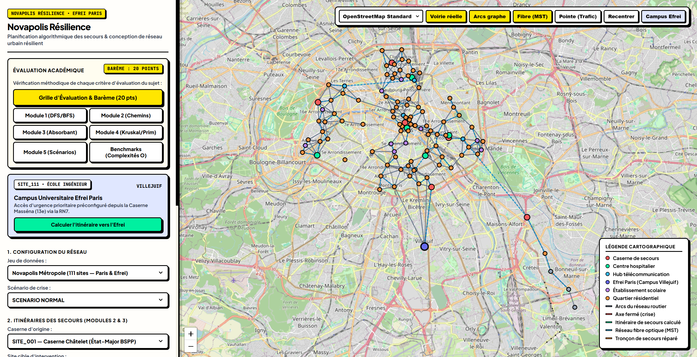
Figure 6 — Version sobre pour l’évaluation.
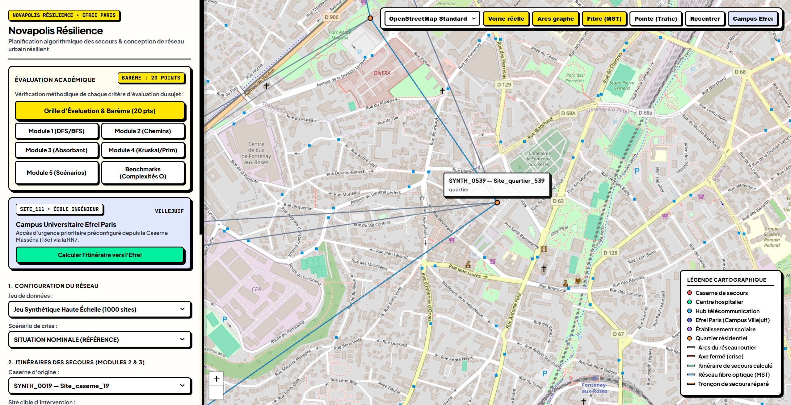
Figure 7 — Correction d’affichage des infobulles.
Le diagnostic du notebook sur le jeu réaliste produit 110 sites, 424 routes orientées, 155 liaisons fibre et 26 demandes d’urgence. Le réseau routier contient des cycles, ce qui est attendu dans un réseau urbain. Le réseau fibre présente deux composantes, dont une composante principale de 109 sites et un site isolé.
L’itinéraire SITE_001 → SITE_027 est obtenu en un arc topologique avec une durée de 7,65 minutes. Dijkstra et Bellman-Ford renvoient la même distance. En mode voirie réelle, le dashboard affiche une géométrie à haute résolution, annoncée dans l’audit comme une polyligne de 433 coordonnées GPS.
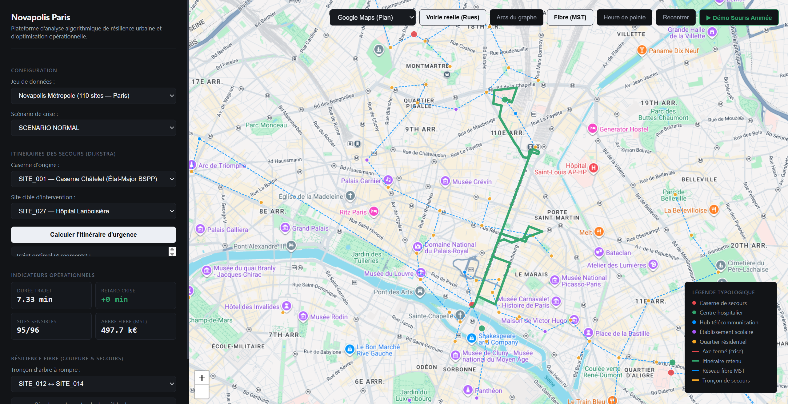
Figure 8 — Itinéraire de référence sur la carte réelle.
Le taux d’accès est élevé mais non parfait. Les 5,5 % de demandes ou sites non couverts ne doivent pas être masqués : ils constituent précisément les cas à traiter dans un plan de renforcement, par ajout de liaisons, repositionnement d’une ressource ou adaptation des priorités.
Quatre scénarios sont comparés sur les demandes perdues, les retards, les sites sensibles et la fibre. La matrice permet de passer d’une démonstration algorithmique à une lecture décisionnelle : quel scénario dégrade l’accessibilité, quel scénario augmente le temps de parcours, et quel scénario exige un investissement de réparation ?
| Scénario | Demandes perdues | Retard moyen | Retard max | Sensibles | Fibre / coût |
|---|---|---|---|---|---|
| Nominal | 0 (0 %) | +0,0 min | +0,0 min | 94,8 % | 2 / 1 798,0 k€ |
| Fermeture de pont | 4 (15,38 %) | +0,0 min | +0,0 min | 94,8 % | 2 / 1 798,0 k€ |
| Panne fibre dorsale | 0 (0 %) | +0,0 min | +0,0 min | 94,8 % | 2 / 1 798,0 k€ |
| Inondation Sud | 0 (0 %) | +1,65 min | +10,8 min | 94,8 % | 2 / 1 804,9 k€ |
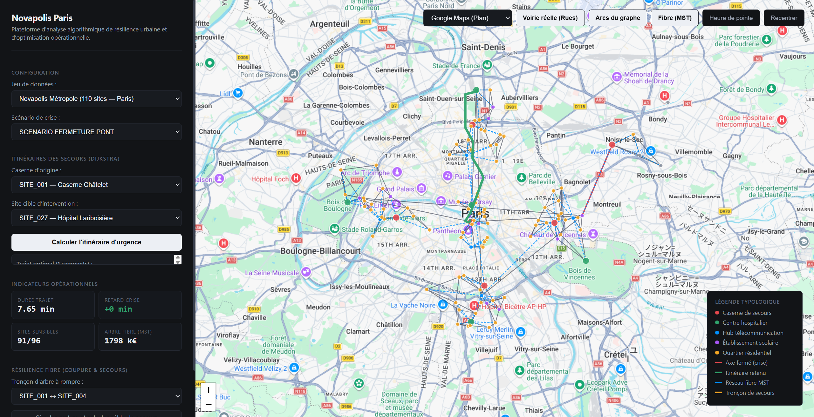
Figure 9 — Axe fermé et impact topologique.
Figure 10 — Détour et retard lié à l’inondation.
La fermeture de pont agit principalement sur la connectivité : certaines demandes deviennent impossibles. L’inondation conserve l’accessibilité mais dégrade le temps de réponse. Cette différence justifie une stratégie à deux indicateurs : disponibilité binaire et performance temporelle.
Le réseau fibre est traité comme un graphe non orienté, car une liaison physique peut transporter dans les deux sens. Kruskal et Prim obtiennent le même coût total de 1 798,0 k€ et 108 tronçons dans le jeu produit par le notebook. L’égalité des coûts confirme l’optimalité, même si plusieurs arbres peuvent être possibles lorsque des coûts sont identiques.
Le dashboard visualise le câble défaillant en rouge et propose une liaison de secours en jaune. L’audit d’interface décrit un exemple opérationnel où le remplacement SITE_002 ↔ SITE_005 ajoute 4 k€ par rapport à la liaison initiale. Le notebook, lui, rapporte un cas de test sur SITE_001 ↔ SITE_004 sans remplacement disponible dans la structure chargée. Ces deux sorties ne sont pas contradictoires : elles correspondent à des jeux ou états d’exécution différents ; le rapport doit donc conserver l’identifiant du dataset et du câble pour toute décision.
Figure 11 — Visualisation de la coupure et du raccordement de secours.
Ajouter au résultat de réparation : le nom du dataset, l’arête supprimée, les composantes obtenues, la liste des candidats franchissant la coupe et la raison d’un éventuel échec. Cela rend la preuve auditable et évite les interprétations ambiguës.
Le dashboard associe une carte interactive, des couches activables et des modales analytiques. La bascule entre arcs topologiques et voirie réelle est une décision de conception particulièrement utile : elle expose le modèle mathématique sans prétendre qu’un segment direct représente une rue.
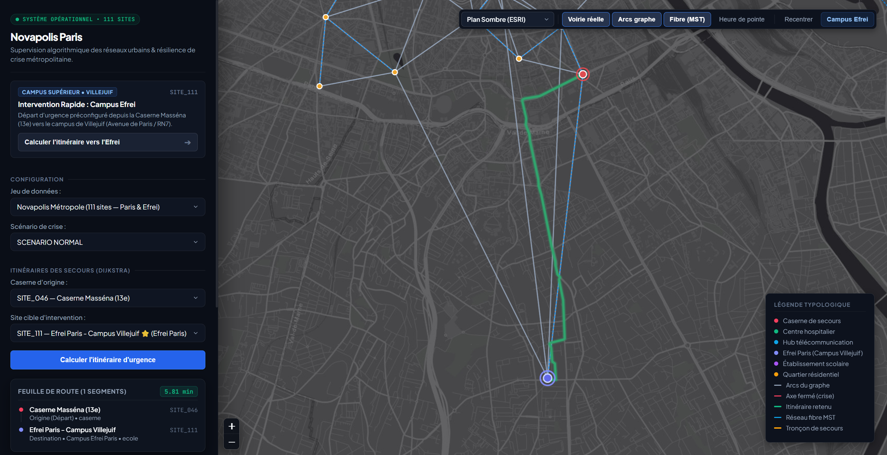
Figure 12 — Lecture du graphe abstrait.
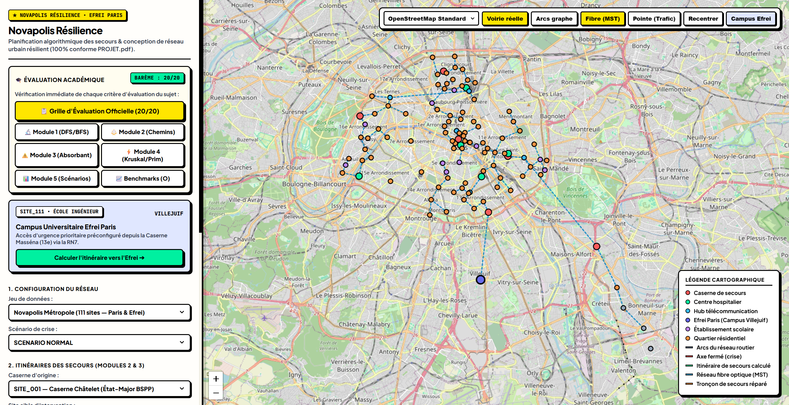
Figure 13 — Fond cartographique OSM.
Cette partie distingue les composants explicitement demandés. Le cœur algorithmique reste en Python standard ; les éléments ci-dessous servent principalement à l’exécution interactive, à la cartographie, au routage géométrique ou à la présentation.
| Composant | Usage dans le projet | Point d’attention |
|---|---|---|
| IPython | Exécution interactive des notebooks et affichage des résultats/figures. | Reproductibilité : conserver les sorties et la version d’exécution. |
| Leaflet 1.9.4 | Carte interactive, marqueurs, polylignes, couches et contrôles. | Version à figer dans le frontend pour éviter les régressions. |
| OpenStreetMap | Fond cartographique standard et contexte géographique. | Respecter attribution et politique d’utilisation des tuiles. |
| Esri | Fond alternatif, notamment Canvas, pour comparer la lisibilité. | Vérifier attribution, quotas et disponibilité du service. |
| Google Maps Tiles | Fond Plan/Satellite hybride dans les preuves visuelles. | Soumis aux conditions, clés et limites de l’API Google Maps. |
| OSRM | Géométrie de voirie réelle et polylignes suivant le réseau routier. | Un résultat de routage externe doit être horodaté et contrôlé. |
| Google Fonts | Typographie de l’interface. | Prévoir une police de repli hors connexion. |
| Font Awesome | Icônes de navigation et de statut. | Vérifier licence, chargement et accessibilité des libellés. |
Le jeu réaliste est documenté et géoréférencé, mais il reste un modèle de projet. Les temps d’arête ne décrivent pas nécessairement la congestion minute par minute, les restrictions de gabarit, les feux, les travaux, les voies réservées ou les priorités accordées aux secours. Les catégories de sites et les demandes sont également représentatives plutôt que connectées à un système métier.
Dijkstra fournit un optimum sur le graphe chargé, pas une garantie sur le monde réel. Floyd-Warshall devient rapidement coûteux lorsque le nombre de sites augmente. Les scénarios modifient des arêtes ou des poids selon des règles déterministes ; ils ne modélisent pas encore les dépendances probabilistes, les pannes corrélées ou les délais de réparation.
La géométrie OSRM et les tuiles sont des dépendances réseau. Une carte visible ne prouve pas la fraîcheur des données. Une indisponibilité de fournisseur, un changement de politique ou un dépassement de quota peut dégrader la démonstration sans que le code algorithmique soit fautif.
Les captures d’écran valident une expérience à un instant donné. Elles ne remplacent ni les tests de charge, ni la validation de la précision géographique, ni une campagne avec des experts des secours. Les valeurs 7,65 min, 5,81 min, 1 798,0 k€ et 519,2 k€ apparaissent dans des artefacts différents : toute comparaison doit préciser la version du dataset et le contexte d’exécution.
| Priorité | Action | Bénéfice attendu |
|---|---|---|
| 1 | Versionner les datasets et afficher leur identifiant dans chaque résultat. | Traçabilité des chiffres et des captures. |
| 2 | Ajouter un mode hors ligne avec tuiles locales ou fond neutre. | Continuité de démonstration et réduction de dépendance. |
| 3 | Exporter un journal machine-readable des scénarios et décisions. | Audit, comparaison et intégration SI. |
| 4 | Introduire capacité, congestion, fenêtres temporelles et restrictions de véhicules. | Meilleure valeur opérationnelle du temps de parcours. |
| 5 | Tester des pannes combinées route/fibre et des réparations sans solution automatique. | Mesure plus réaliste de la résilience. |
| 6 | Ajouter tests de performance et tests de non-régression des API cartographiques. | Stabilité à l’échelle et détection précoce des ruptures. |
| 7 | Prévoir une validation avec un utilisateur métier et une étude d’accessibilité. | Réduction des erreurs d’interprétation en crise. |
Novapolis Résilience réussit son objectif pédagogique et démonstratif : il rend observables les mécanismes fondamentaux de la théorie des graphes, les relie à une carte urbaine et expose les conséquences de scénarios de crise. La combinaison des tests automatisés, des notebooks, de la matrice de résilience et des captures d’interface forme une base solide pour une soutenance et une première analyse comparative.
La valeur la plus importante n’est pas un itinéraire isolé, mais la capacité à expliquer pourquoi un itinéraire est choisi, pourquoi un site devient inaccessible, pourquoi deux arbres ont le même coût, et quelles hypothèses rendent ces conclusions valides. La prochaine étape est donc moins d’ajouter des effets visuels que de renforcer la traçabilité, la qualité des données et la validation métier.
README.md — architecture, commandes, algorithmes et complexités.RAPPORT_AUDIT_QA.md — campagne de recette et résultats de l’interface.SOUTENANCE_ORALE_12MIN.md — argumentaire et interprétation des modules.notebook_projet.ipynb et PROJET_NOVAPOLIS_RAPPORT.ipynb — sorties, scénarios, benchmarks et tests.data/realiste/README.md — description du dataset réaliste.output/ et screenshots/ — figures et preuves visuelles utilisées dans ce rapport.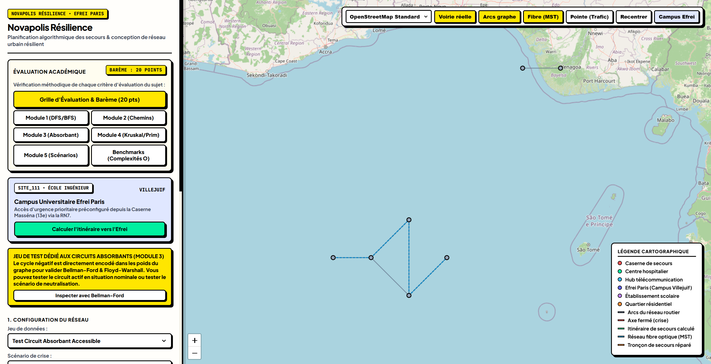
Figure 14 — Exemple de visualisation des jeux de scénarios et de leurs alertes.